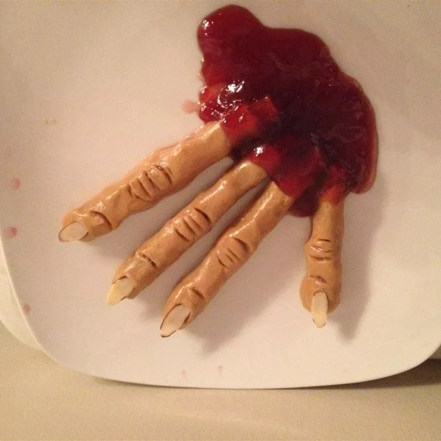

Bloody Fingers

Description
These Halloween treats are scary enough and tasty enough for kids to love. They are also fairly healthy and the kids may want to get involved in the preparations.
Ingredients
- 2 cups creamy peanut butter
- 2 cups powdered milk
- 2 cups honey
- 1 (15 ounce) package pretzel rods
- 2 tablespoons sliced almonds, or as needed
- ¼ cup plum jam, or as needed
Steps
- Mix peanut butter, powdered milk, and honey together in a bowl until mixture resembles a soft dough. This will be the 'flesh' of the fingers.
- Mold enough dough around each pretzel rod, making sure to cover the ends. The pretzels will be the 'bones' of the fingers.
- Use the tip of a teaspoon the make marks on the 'flesh' similar to knuckles.
- Push 1 sliced almond onto 1 end of each 'finger' to resemble a finger nail.
- Place jam in a microwave-safe bowl and heat in microwave until softened, 20 to 30 seconds. Dip the end opposite the 'finger nail' into the jam for the 'blood'.
Home